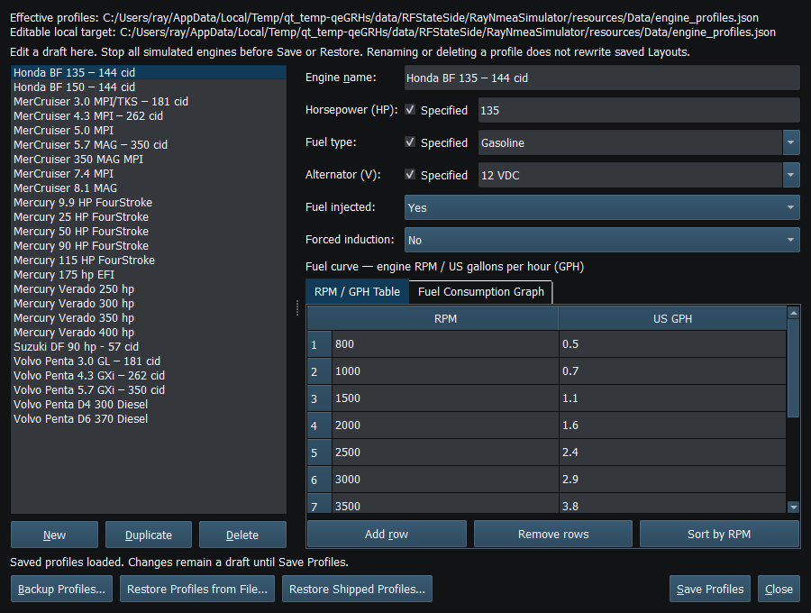
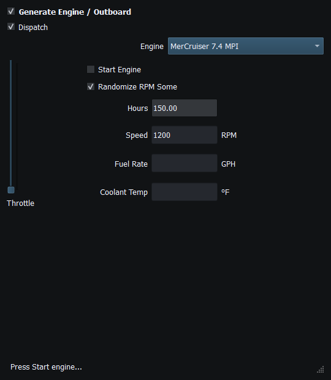
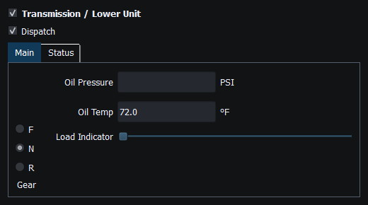
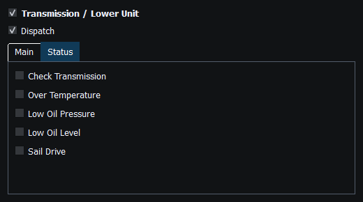

Engine/Outboard and Transmission/Lower Unit generators supply optional instance-specific dynamic values. Engine Rapid, Engine Dynamic and Transmission Dynamic instruments remain usable with supported manual properties.
Add a generator before or after its instruments. Matching instances connect automatically; duplicate instruments are not needed when adding or replacing a source.
Start Engine, RPM randomization and movement-controlled RPM affect local simulation. A source may show that Vessel Movement controls its RPM; do not fight that source by repeatedly editing the destination instrument. Engine hours, fuel rate, coolant/oil values and status fields have distinct units. Not every supported instrument property is necessarily driven by a source.
Transmission gear and lower-unit status follow the configured source relationships and instances. A displayed forward/neutral/reverse choice is a simulated state. It is not a physical motor-control command from this UI.
The profile curve sets simulated performance. Use the displayed units and check the intended RPM range. Adjust a copy when exploring different performance; the curve is not a measurement of your physical engine.
Check generator instance, instrument instance, Enable/Dispatch and whether another source owns RPM. Then inspect supported signal/property mappings. If local values agree but the receiver does not, investigate instrument Enable/interval, encoder support and selected transport instead of adding duplicate generators.

Figure 45. Engine Profiles edits local performance data; it does not control a real engine. Click to enlarge.

Figure 46. Engine generator main controls and local start state. No external engine is controlled. Click to enlarge.

Figure 47. Transmission generator controls feed compatible instance-specific instruments. Click to enlarge.

Figure 48. Lower-unit status is a local simulation source; manual instrument TX remains independent. Click to enlarge.
Generating NMEA Data · Enable, Dispatch and Sending · Manual Vessel Movement · Autopilot and Route Following · Game Controller Mode · Weather and Environmental Simulation · AIS Simulation · Windlass Simulation · Connection Troubleshooting · Route Overview · Engineering Units